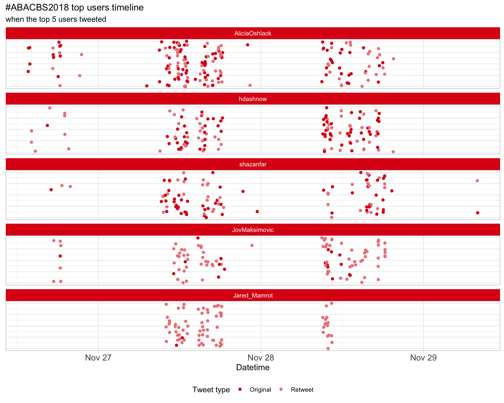
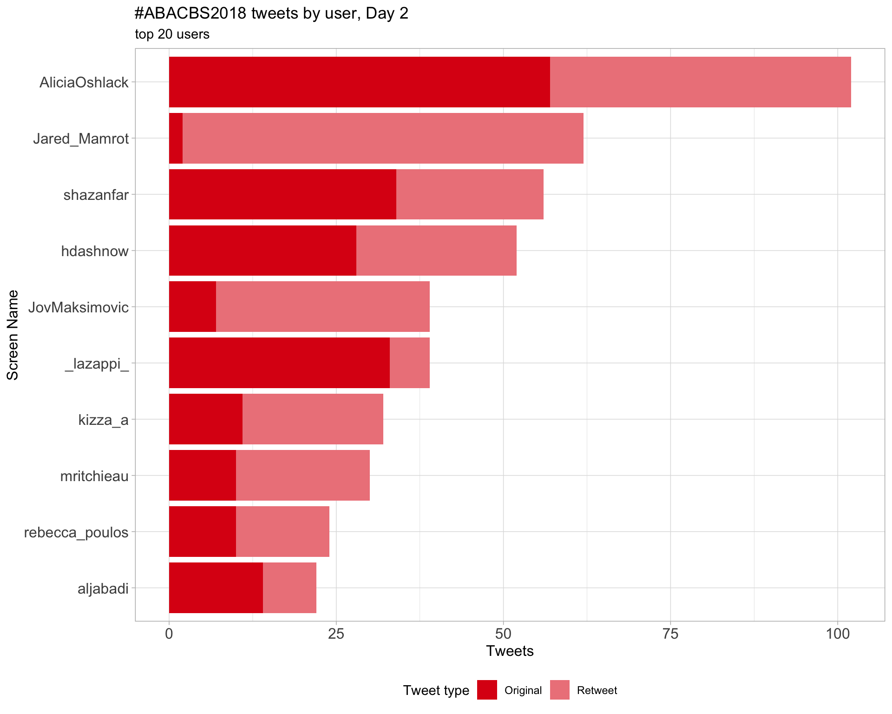
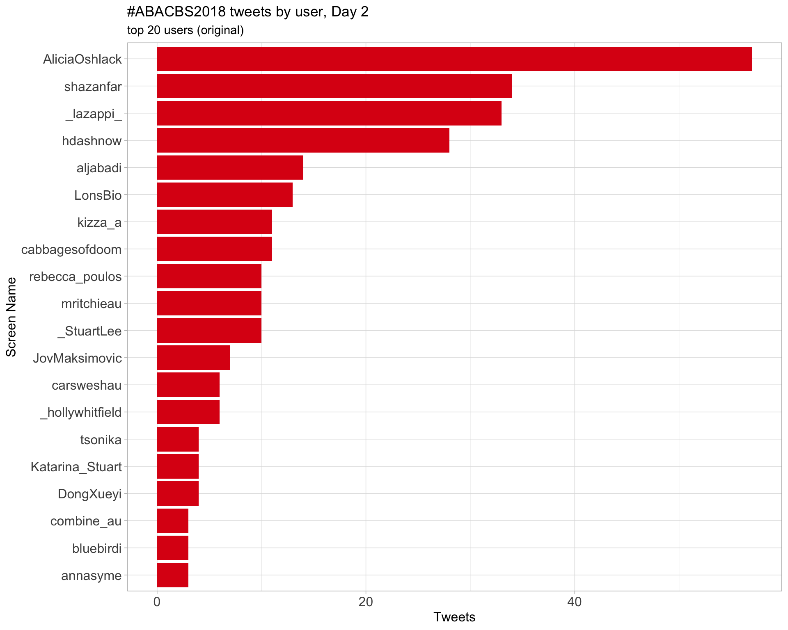
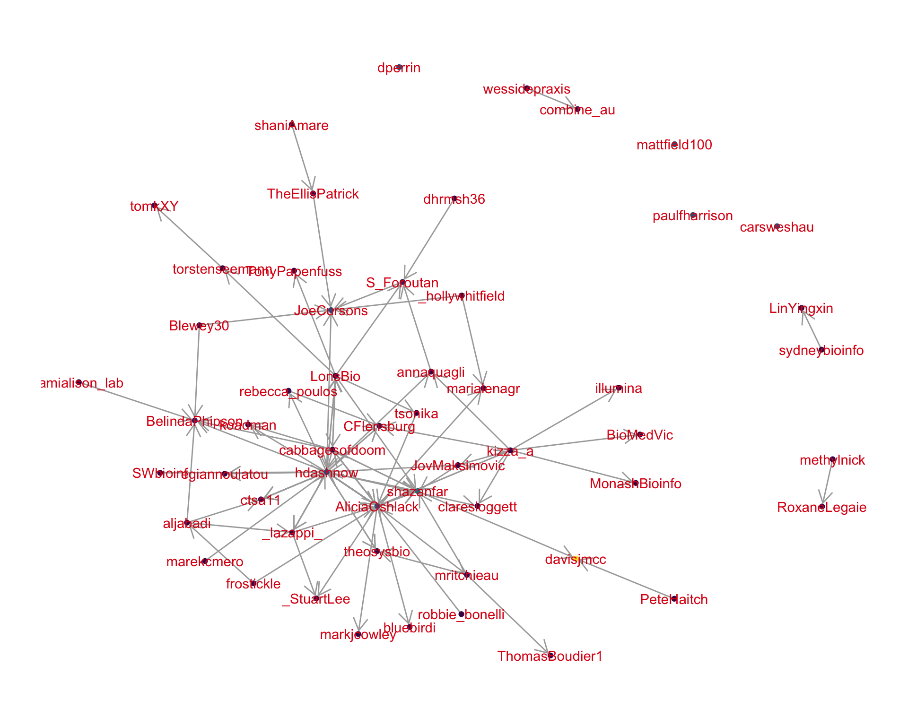
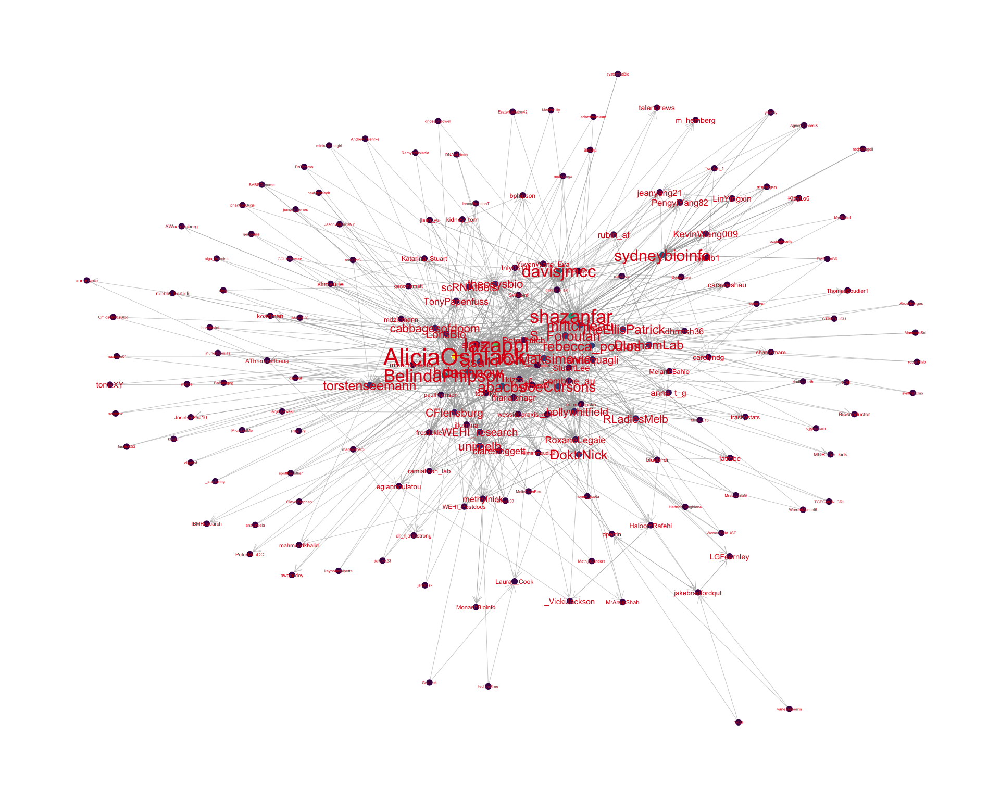
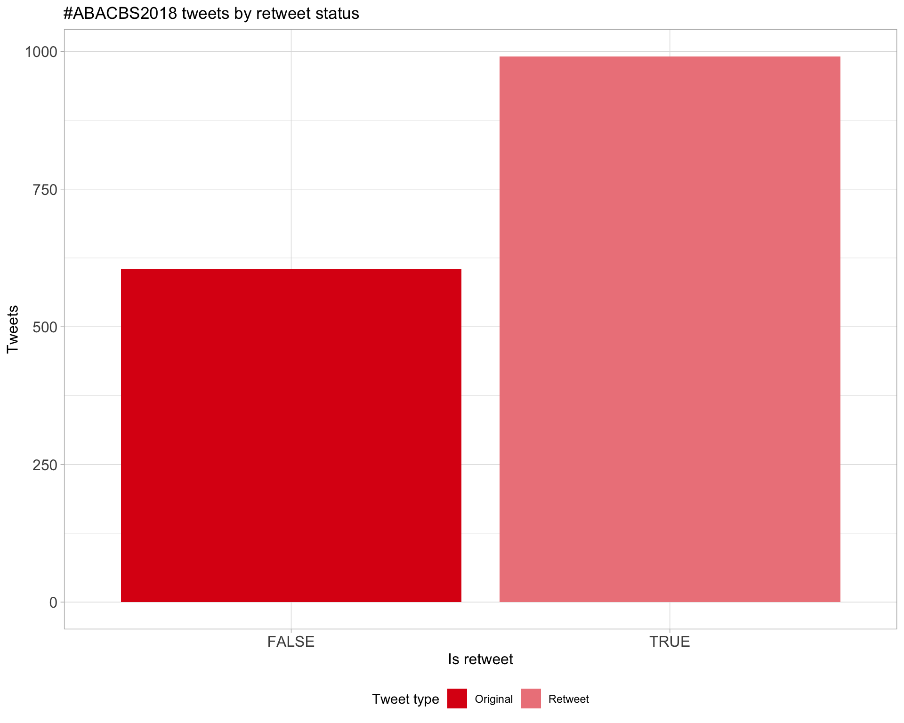
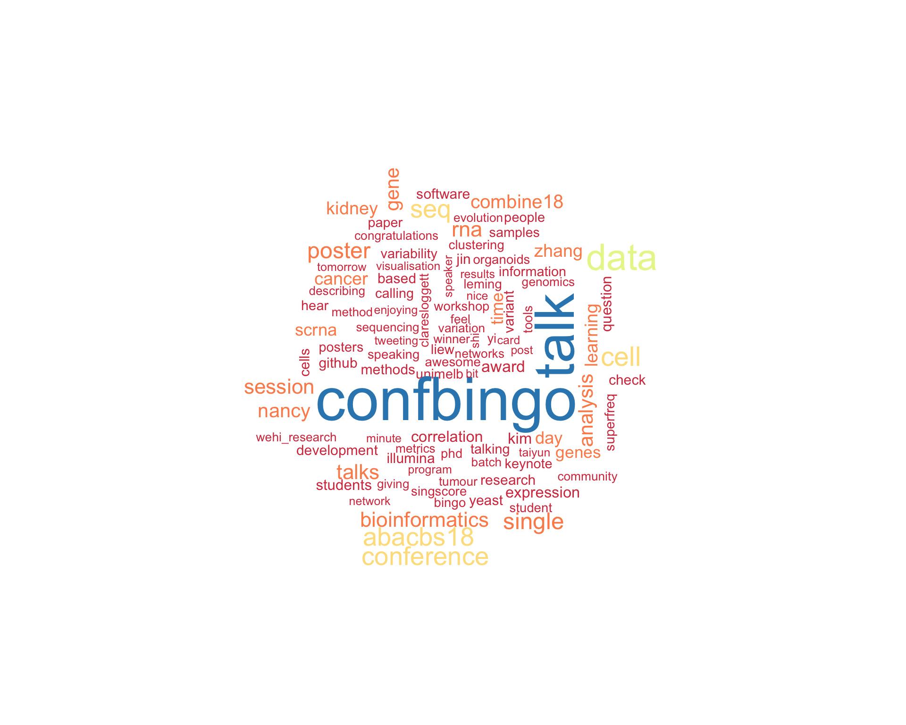

Twitter coverage of the ABACBS 2018 conference
Luke Zappia
2018-11-28 11:40:03
Parameters
| Parameter | Value |
|---|---|
| Hashtag | #ABACBS2018 |
| Conference | ABACBS 2018 conference |
| Time Zone | Australia/Melbourne |
| Days | c(“2018-11-26”, “2018-11-27”, “2018-11-28”) |
| Accent colour | #dd0c15 |
| Pallete | Set1 |
| k-core | 2 |
| Topics k | 6 |
| Bigram filter | 3 |
| Fixed | FALSE |
1 Introduction
An analysis of tweets from the ABACBS 2018 conference conference. A total of 1133 tweets from 193 users were collected using the rtweet R package.
2 Timeline
2.1 Tweets by day

2.2 Tweets by day and time
Filtered for dates 2018-11-26 - 2018-11-28 in the Australia/Melbourne timezone.

3 Users
3.1 Top tweeters

3.2 Top original tweeters

3.3 Retweet proportion

3.4 Top tweeters by time

3.5 Top tweeters by day
3.5.1 All tweets
Day 1

Day 2

Day 3

3.5.2 Original tweets
Day 1

Day 2

Day 3
3.6 Sources

4 Networks
4.1 Replies
The “replies network”, composed from users who reply directly to one another, coloured by page rank.

4.2 Mentions
The “mentions network”, where users mention other users in their tweets. Filtered for a k-core of 2. Node colour and size adjusted according to PageRank score.

5 Retweets
5.1 Retweet proportion

5.2 Retweet count
5.3 Top retweets
| screen_name | text | retweet_count |
|---|---|---|
| AliciaOshlack |
If you are interested in joining my lab for a post-doc in research bioinformatics have a chat to me or message me at #abacbs2018 #COMBINE18 https://t.co/404MibRFnZ |
41 |
| lazappi | #ABACBS2018 Award Winners - Early-career researcher @BelindaPhipson - Open science @torstenseemann - Professional bioinformatics Alex Garnham - Mid-career researcher David Lynn - Senior research fellow Mark Ragan | 14 |
| AliciaOshlack | Congratulations @torstenseemann for your open science award at #abacbs2018. Well deserved! | 11 |
| AliciaOshlack | Congratulations to @BelindaPhipson for winning the #abacbs2018 early career researcher award. There couldn’t be a more deserving winner #soproud | 11 |
| lazappi | Thanks @BelindaPhipson for mentioning @scRNAtools. Check it out here if you are interested https://t.co/EClP64fOU7. Submissions and updates welcome! #abacbs2018 | 11 |
| lazappi | #abacbs2018 international keynote @DunhamLab “Drivers of aneuploidy and adaptation in yeast” https://t.co/46wfHZhqMC | 11 |
| rebecca_poulos |
Thanks #abacbs2018 for the chance to give a talk about our recent #mutational #signatures study. If you’d like to, you can read more here - just published last week in @PLOSGenetics: https://t.co/0OQZXam0h0 |
10 |
| rebecca_poulos |
Learning about en masse competitions using barcoded yeast strains - gives 124,744 fitness measurements, from @DunhamLab at #abacbs2018 https://t.co/MRDbRNpsUX |
10 |
| hdashnow |
@theosysbio: “Data resuscitation” That’s an apt description of what Bioinformaticians do when they they are not engaged in the experimental design, but rather are asked to save the experiment. #abacbs2018 |
10 |
| AliciaOshlack |
BAZAM your Bams! Poster 22 #abacbs2018 https://t.co/Yn7ufEky7O https://t.co/3Cf7N0G1Vk |
9 |
6 Favourites
6.1 Favourite proportion

6.2 Favourite count

6.3 Top favourites
| screen_name | text | favorite_count |
|---|---|---|
| AliciaOshlack | Managed to get an Oshlack lab photo of the whole group at #abacbs2018 #loveit https://t.co/dmun9v1Ha7 | 58 |
| AliciaOshlack | Congratulations to @BelindaPhipson for winning the #abacbs2018 early career researcher award. There couldn’t be a more deserving winner #soproud | 54 |
| BelindaPhipson | Feel honoured to receive the ECR award at #abacbs2018. Thank you to my amazing mentors @AliciaOshlack and Gordon Smyth for nominating me. | 54 |
| cabbagesofdoom | Much deserved #abacbs2018 open source award to @torstenseemann - I’ve annotated multiple organisms with Prokka, and I’m a fan! | 39 |
| hdashnow |
@theosysbio: “Data resuscitation” That’s an apt description of what Bioinformaticians do when they they are not engaged in the experimental design, but rather are asked to save the experiment. #abacbs2018 |
37 |
| AliciaOshlack |
If you are interested in joining my lab for a post-doc in research bioinformatics have a chat to me or message me at #abacbs2018 #COMBINE18 https://t.co/404MibRFnZ |
33 |
| AliciaOshlack | Congratulations @torstenseemann for your open science award at #abacbs2018. Well deserved! | 30 |
| lazappi | #abacbs2018 international keynote @DunhamLab “Drivers of aneuploidy and adaptation in yeast” https://t.co/46wfHZhqMC | 30 |
| lazappi | #ABACBS2018 Award Winners - Early-career researcher @BelindaPhipson - Open science @torstenseemann - Professional bioinformatics Alex Garnham - Mid-career researcher David Lynn - Senior research fellow Mark Ragan | 28 |
| JoeCursons | The #ABACBS2018 professional bioinformatics award given to Alex Garnham - well deserved as the powerhouse of the @WEHI_research bioinformatics service unit and the saviour of many @WEHI_Postdocs with data to analyse! | 28 |
7 Quotes
7.1 Quote proportion

7.2 Quote count

7.3 Top quotes
| screen_name | text | quote_count |
|---|---|---|
| AliciaOshlack | Apparently the conference program has the hashtag at #abacbs2018 … Best to go with that and not #ABACBS18 I think https://t.co/Wq3VdV2jSn | 2 |
| shazanfar |
my current TweetDeck tab is ‚Äú#combine18 OR #combine2018 OR #abacbs18 OR #abacbs2018‚Äù maybe I should include the SNPs associated too üòÇü§¶‚Äç‚ôÄÔ∏è https://t.co/iBtt6sLApf |
2 |
8 Media
8.1 Media count

8.2 Top media
| screen_name | text | favorite_count |
|---|---|---|
| AliciaOshlack | Managed to get an Oshlack lab photo of the whole group at #abacbs2018 #loveit https://t.co/dmun9v1Ha7 | 58 |
| lazappi | #abacbs2018 international keynote @DunhamLab “Drivers of aneuploidy and adaptation in yeast” https://t.co/46wfHZhqMC | 30 |
| RoxaneLegaie | As the Professional Bioinformaticians Representative at @abacbs and a co-organiser of the @RLadiesMelb, I couldn‚Äôt be any prouder of our Prof Bioinfo Award winner 2018‚Ķ Alex Garnham !! ü§óüéâüíÉüèºüí™üëè Congrats lady! üòéüëå #abacbs2018 https://t.co/ABt02OY59r | 27 |
| RoxaneLegaie | Congratulations @_hollywhitfield for winning the @combine_au Best Talk prize and for sharing it with us at #abacbs2018. A great talk indeed! üëå And good luck with the upcoming PhD! @WEHI_research https://t.co/KeIkV4JTi4 | 25 |
| AliciaOshlack | missMethyl #woohoo #abacbs2018 @JovMaksimovic @BelindaPhipson https://t.co/I9g1pV6Gjg | 24 |
| JovMaksimovic | Great to see the Illumina developing open source software #ABACBS2018 #byebyeblackbox https://t.co/GuD4iLys9i | 20 |
| lazappi | #abacbs2018 Day 2 international keynote from @ctsa11 https://t.co/NGe43lPpKQ | 17 |
| mritchieau | Charity Law is unwell, so won’t be presenting at #abacbs2018, but you can read about her work on exploring intron signal at https://t.co/ip7TMoN34f. On the upside, the morning session is now back on time :) Get well soon Charity! https://t.co/lBrXREjZ4e | 16 |
| mritchieau | Leming Shi tells us about MAQC/SEQC projects: huge collaboration that used RNA mixtures to compare gene expression technologies and analysis methods. A valuable resource for the research community. Extending to biomarker analysis at present - hoping to publish soon #abacbs2018 https://t.co/BN8LAV8I0C | 15 |
| Laura__Cook | Excited for my first #bioinformatics conference this week! #ABACBS2018 #phd #thylacine #genomics @unimelb https://t.co/4wuWT8zLQN | 15 |
8.2.1 Most liked media image

9 Tweet text
9.1 Word cloud
The top 100 words used 3 or more times.

9.2 Bigram graph
Words that were tweeted next to each other at least 3 times.

9.3 Topic modelling
Top 10 words associated with 6 topics identified by LDA.

9.3.1 Representative tweets
Most representative tweets for each topic
Topic 1
| topic | screen_name | text | gamma |
|---|---|---|---|
| 1 | carsweshau | Belinda Phipson discussing growing kidney organoids in a dish and assessing variability between these (kidney organoid maturity is a big contributor towards the variability). Single cell analysis shows highly variable genes, confirming maturity drives variability #ABACBS2018 | 0.9932673 |
| 1 | CFlensburg |
#abacbs18 (aka #abacbs2018) going down this week, conference starting tomorrow, and I’ll try to live report a bit. Program here: https://t.co/CmbEoA7kJX Feel free to follow/filter/unfollow/mute/block/report as you feel appropriate. For other live tweeps: @TweetDeck is awesome. |
0.9932673 |
| 1 | mritchieau | ⁦@theosysbio:⁩ mutual information, in particular partial information decomposition works better for network reconstruction. Nice results on neuronal differentiation published in Stumpf PS et al. (2017) https://t.co/0WxhlEoTsP - first author is a long lost cousin :) #abacbs2018 https://t.co/M0qYvOvTr4 | 0.9919338 |
| 1 | carsweshau | Improving mutual information (Mc Mahon et Al. J. Roy Soc. 2018), multivariate information measures, partial information decomposition. Switching from R to Julia gave a tremendous computational speed up… (not surprising) #abacbs2018 | 0.9919338 |
| 1 | minouye271 |
If anyone at #abacbs2018 is looking for a postdoc in multiomics or polygenic risk scores in Aus or UK, feel free to DM/email me. The @CamBakerSGI is recruiting at both its @BakerResearchAu & @Cambridge_Uni nodes. Eg https://t.co/oJ3a6ytDBK More info at https://t.co/R5AQWPf89N |
0.9915136 |
| 1 | lazappi | BP: Batch to batch variability can be explained by relative maturity of organoids. This can be applied to a disease modelling experiment using a patient mutation and corrected line. #abacbs2018 | 0.9899416 |
| 1 | LonsBio | Application of @bphipson variability results in patient corrected iPSC cells work from @kidney_tom et al, filtering out highly variable genes for DE analysis https://t.co/DjoBK5l47n #ABACBS2018 | 0.9899416 |
| 1 | shazanfar | Fantastic to hear from #combine18 oral presentation winner @_hollywhitfield today at #abacbs2018 i do want to note that all COMBINE speakers were at such a high calibre, really speaks to the talent and hard work of Australian bioinformatics students! | 0.9899416 |
| 1 | lazappi | BP: iPS cells can be used to grow a mini kidney organoid. These can be used for disease modelling, drug screening etc. But how similar are they to a real kidney. #abacbs2018 | 0.9885245 |
| 1 | RoxaneLegaie | As the Professional Bioinformaticians Representative at @abacbs and a co-organiser of the @RLadiesMelb, I couldn‚Äôt be any prouder of our Prof Bioinfo Award winner 2018‚Ķ Alex Garnham !! ü§óüéâüíÉüèºüí™üëè Congrats lady! üòéüëå #abacbs2018 https://t.co/ABt02OY59r | 0.9885245 |
Topic 2
| topic | screen_name | text | gamma |
|---|---|---|---|
| 2 | shazanfar | Taiyun Kim is speaking about choice of similarity metric (e.g. Pearson/Spearman correlation? Euclidean?) and how it affects single cell clustering. Found essentially that correlation based metrics perform better at recovering cell types #abacbs2018 | 0.9932673 |
| 2 | aljabadi | Taiyun Kim explains how #kmeans clustering performed better when using correlation-based similarity measures (Pearson and Spearman) than when distance-based ones were used considering pre-defined labels. #confBingo #abacbs2018 https://t.co/lZLQXG0w31 | 0.9915136 |
| 2 | KevinWang009 | Taiyun Kim from @sydneybioinfo group on similarity metrics for single cell RNA-Seq data at #abacbs2018. A surprising result: Correlation based metrics tend to do better than distances metrics like Euclidean distance! | 0.9915136 |
| 2 | AliciaOshlack |
Conference Bingo for #abacbs2018 is here! Download your card and start tweeting using the #confBingo hashtag. Post you winning row and winning complete card for a bottle of wine on me! Thanks @LonsBio @BreonSchmidt #ABACBS18 |
0.9915136 |
| 2 | sydneybioinfo | Several @sydneybioinfo members are in attendance at #abacbs2018 with talks + posters. Give these people a follow & come say Hi! @KevinWang009 Taiyun Kim (talk today), Hani Kim, @LinYingxin @rylmb1 @shazanfar @TheEllisPatrick Nick Canete, Heeva Baharlou, Kitty Lo, Dario Strbenac | 0.9910472 |
| 2 | aljabadi |
Richard Edwards on promise of 10x Chromium’s Diploid Phasing to perform comparable to long-read technologies at the cost of short read ones by #demultiplexing using #SNPs. #abacbs2018 https://t.co/ZPinB1tqFB |
0.9905265 |
| 2 | lazappi | One more 5 min student talk before the break - Taiyun Kim, “Impact of similarity metrics on single-cell RNA-seq data clustering” #abacbs2018 | 0.9892797 |
| 2 | mritchieau | Charity Law is unwell, so won’t be presenting at #abacbs2018, but you can read about her work on exploring intron signal at https://t.co/ip7TMoN34f. On the upside, the morning session is now back on time :) Get well soon Charity! https://t.co/lBrXREjZ4e | 0.9885245 |
| 2 | kizza_a | hey @CFlensburg didnt get to ask at qanda. do you have to be careful with cnv on RNAseq if the samples were pooled? got caught out by pooled mice calling variants on RNAseq #abacbs2018 | 0.9885245 |
| 2 | lazappi | TK: Correlation based distance metrics lead to scRNA-seq clustering that better matches predefined labels #abacbs2018 | 0.9866425 |
Topic 3
| topic | screen_name | text | gamma |
|---|---|---|---|
| 3 | carsweshau | Maitreya Dunham on rich genomic datasets and thinking about CNV (causative? drivers?) in human disease (aneuploidy, cancer, complex disease). Yeast as a relevant system owing to CNVs affecting many traits in yeast, can perform experimental evolution in a chemostat #abacbs2018 | 0.9940100 |
| 3 | cabbagesofdoom | @koadman wrt your repeat % Q: v. low gaps levels but also smaller assemblies for the other snake genomes analysed. Will need to dig deeper to tell missing data from possible 10x repeat over-assembly artefact. Are we repeating repeats? #ABACBS2018 #QandA | 0.9923144 |
| 3 | _hollywhitfield |
To account for individual variability, and administer the correct interventions Kim-An Do is producing integrated networks: Interaction databases + data -> patient-specific networks #abacbs2018 #ABACBS18 |
0.9910472 |
| 3 | methylnick | Twas a brilliant talk and controls are fundamental to any interpretation of genomic data. It’s a slow adoption but my colleagues are starting to listen. #abacbs2018 #reproducibility #controls #referenceMaterial https://t.co/49SqJRvO0v | 0.9905265 |
| 3 | lazappi | Slides for my talk in this sessionhttps://speakerdeck.com/lazappi/visualising-trees-to-choose-clusters-for-scrna-seq-data. Software on CRAN https://t.co/EFeMPtEt3p and GitHub https://t.co/sbmRKgygP8 #abacbs2018 | 0.9905265 |
| 3 | shazanfar | #abacbs2018 A big issue with comparing cell proportions with droplet scRNA-Seq data is the need to make correct selection of high quality cells. I demonstrate this in my poster, presenting tomorrow https://t.co/4bXD2Pejy3 | 0.9899416 |
| 3 | JoeCursons | The #ABACBS2018 professional bioinformatics award given to Alex Garnham - well deserved as the powerhouse of the @WEHI_research bioinformatics service unit and the saviour of many @WEHI_Postdocs with data to analyse! | 0.9885245 |
| 3 | lazappi | Twitter analysis from #COMBINE18 yesterday https://t.co/a41UHNAMYR. I will be doing the same for #ABACBS2018. Tweet a link to GitHub, CRAN or Bioconductor to add something to the software list. | 0.9876548 |
| 3 | RoxaneLegaie | Pumped to be chairing the Genomics session this afternoon at #ABACBS2018 Great start with an inspiring talk from Prof Leming Shi from Shanghai üòéüëå https://t.co/hu4EALcL9Q | 0.9876548 |
| 3 | frostickle | Afternoon keynote by Leming Shi at #ABACBS2018 - Quality Control and Standardization of Omics and Bioinformatics for Precision Medicine. https://t.co/ldOdCbPqMJ | 0.9866425 |
Topic 4
| topic | screen_name | text | gamma |
|---|---|---|---|
| 4 | mritchieau | Leming Shi tells us about MAQC/SEQC projects: huge collaboration that used RNA mixtures to compare gene expression technologies and analysis methods. A valuable resource for the research community. Extending to biomarker analysis at present - hoping to publish soon #abacbs2018 https://t.co/BN8LAV8I0C | 0.9937813 |
| 4 | carsweshau | Stephen J. Bent has a story of four moths and working on ancient DNA samples (characteristic damage would be lots of cytosine deamination, base oxidation of purines, shorter fragments). One of these moth samples is almost 100 years old! C>T & G>A at ends is the hint! #abacbs2018 | 0.9926606 |
| 4 | shazanfar | #abacbs2018 hearing from @S_Foroutan on singscore, method to estimate truly single sample gene set/pathway scores. These are useful for building interpretable and stable features for cohort-independent and prospective learning. | 0.9910472 |
| 4 | DunhamLab | I’m up first this morning at #abacbs2018! I’ll talk about “Drivers of aneuploidy and adaptation in yeast” focusing on a few datasets we’ve generated that I’d love to set this crowd loose on for more analysis. | 0.9910472 |
| 4 | mritchieau | ⁦@DunhamLab⁩ uses a pooled approach to gather fitness measures in yeast and associate with changes in copy number using regression. Fun fact: barcoding pioneered by yeast geneticists in the ‘90s - now used by everyone #abacbs2018 https://t.co/idw6ib6mqc | 0.9905265 |
| 4 | paulfharrison | .@CFlensburg describing SuperFreq. Parallel plots of copy number and variant allele frequency. Both can be segmented, but it works better to do both simultaneously. A nice simple example of multi-task learning, maybe. #abacbs2018 | 0.9892797 |
| 4 | shazanfar | #abacbs2018 Ralph Patrick describing Differential Proportion Testing for cell types across sample conditions using scRNA-seq, during and after myocardial infarction | 0.9885245 |
| 4 | carolyndg | Presenting a paper at #ABACBS2018 on https://t.co/yIWi4gzkMV with new Haemopedia RNA-seq üê≠ &üë© haematopoeitic gene expression datasets. Come and chat about lineage signatures and data portals. | 0.9885245 |
| 4 | lazappi | Take aways from @cabbagesofdoom #abacbs2018 talk: Linked reads look useful for assembly, it‚Äôs possible to assemble a species in a few months if you have a course to run, be careful about interpreting BUSCO results üêç | 0.9876548 |
| 4 | mritchieau | ⁦@rebecca_poulos⁩ gives us a fantastic talk on linking mutational signatures and driver mutations in cancer - this work was recently published! https://t.co/cS8CiiRKtj #abacbs2018 https://t.co/yS1AIPHTBm | 0.9876548 |
Topic 5
| topic | screen_name | text | gamma |
|---|---|---|---|
| 5 | mritchieau | ⁦@DunhamLab⁩ improved upon results from DNAcopy to segment data along the genome in collaboration with statisticians ⁦@daniela_witten⁩ and Lucy Gao. Applied 1D Fused Lasso to help distinguish between ‘steppy’ or linear models and map driver genes #abacbs2018 https://t.co/UdxjsF4j23 | 0.9932673 |
| 5 | shazanfar | #abacbs2018 Kim-Anh Do now speaking about PRECISE, Personalised cancer-specific integrated estimation. Two main aims in personalised medicine: build more accurate understanding of individual patients, and introduce adaptive treatments to individuals | 0.9926606 |
| 5 | paulfharrison |
.@dunhamlab looking at driver genes vs larger regions of fitness of genes with 1D fused LASSO at #abacbs2018 (if I’m understanding correctly). Hearing LASSO these days I wonder if Elastic-Net can be used, here would give intermediates between stepwise and smooth curve fit. |
0.9923144 |
| 5 | RoxaneLegaie | ** Shaming Tweet Warning ** With over 50 people identifying as Professional Bioinformaticians in Australia, and most of them being from Melbourne‚Ķ How come it was only 5 of us at the Prof Bioinfo get together tonight?? ü§î Never mind, more food & drinks for us! üòú #abacbs2018 https://t.co/2W6euJ4JNz | 0.9899416 |
| 5 | jakebradfordqut | I heard from @LGFearnley in today’s poster session at #ABACBS2018. It was interesting to hear the computational challenges he is facing around designing pgRNA for #CRISPR screening experiments. Thanks for your time, @LGFearnley. | 0.9899416 |
| 5 | YiwenWang_Eva | Glad that people are interested in how to select methods to adjust for batch effect, even though not for microbiome data. I got many good questions and suggestions today! #abacbs2018 @tpq__ @annaquagli @mritchieau Thanks for the picture from my friends! @youyupei @jiaan_yu https://t.co/WlsNTT6gCx | 0.9899416 |
| 5 | lnly0311 | Chris Saunders giving a talk about Improving sequence analysis to increase the clinical value of whole genome sequencing. #abacbs2018 - “Not using JAVA” - people clapping | 0.9885245 |
| 5 | RoxaneLegaie | Professional Bioinformaticians attending #abacbs2018 (#abacbs18) Join us for the social event at the Shaw Davey Slum after the @abacbs opening ceremony tonight! https://t.co/CmWQ4RMjAO | 0.9876548 |
| 5 | aljabadi |
The “inevitable tSNE plot” possibly distinguishing the tumour cells from others - from Dr Ann-Marrie Patch. #abacbs2018 https://t.co/oQGZcemJnU |
0.9866425 |
| 5 | hdashnow | @ctsa11: There is a lot of room for false positives with structural variant calling because with two breakpoints the search space is the size of the genome squared #abacbs2018 | 0.9866425 |
Topic 6
| topic | screen_name | text | gamma |
|---|---|---|---|
| 6 | carsweshau | Yi Jin Liew with epigenetic adaptation of corals to ocean acidification. Corals are very important to oceanic ecosystems, so relevant to know effects of rising temperatures etc. on coral. Chances are in humans, a random CpG site will be methylated. Coral, not so! #abacbs2018 | 0.9929771 |
| 6 | lazappi | #ABACBS2018 Award Winners - Early-career researcher @BelindaPhipson - Open science @torstenseemann - Professional bioinformatics Alex Garnham - Mid-career researcher David Lynn - Senior research fellow Mark Ragan | 0.9915136 |
| 6 | frostickle |
Bioinformatics career panel time at #COMBINE18 with: @IBMResearch @bwgoudey @PeterMacCC @RoxaneLegaie @illumina @ctsa11 @QIMRBerghofer @IamAMP Good to see a balance in industry vs public hospital vs academic & also gender! #ABACBS2018 https://t.co/pzB2UfR6zw |
0.9910472 |
| 6 | aljabadi |
Leming Shi explains how lucky we are working in life sciences with a lot of things to discover compared to drug developers who have a rough path ahead until it a real difference is made. #PrecisionMedicine #abacbs2018 https://t.co/9JAH8eFHXE |
0.9910472 |
| 6 | mritchieau | Yi Jin Liew: coral CpG methylation is very different to patterns seen in mammals. Mostly occurs in gene bodies and much rarer (~ 7%) at CpG islands compared to humans (~ 60-80%) #abacbs2018 https://t.co/PjWS0noQZa | 0.9905265 |
| 6 | AliciaOshlack | There are several reasons why rare disease cases remain undiagnosed: 1) variant of unknown significance (lots of work happening here) 2) variants we still don’t have tools (methods, technology)to detect 3) not genetic My lab is interested in 2) #abacbs2018 | 0.9905265 |
| 6 | shazanfar | #abacbs2018 @steman_research presenting work on ARMET (algorithm for resolving microenvironment transcriptomes). Passes on hierarchical structure of cell types rather than treating independently to deconvolute bulk transcriptomes | 0.9899416 |
| 6 | lazappi | Ann-Marie plots walking us through the challenges of cancer genomics, different types of variants, tumour heterogeneity, challenges related to therapy. #abacbs2018 | 0.9885245 |
| 6 | mritchieau | @theosysbio discusses the results of Marbach et al. (2012) from the DREAM 5 challenge. We must not use correlation to reconstruct gene regulatory networks is one of their take home messages. Who knew! https://t.co/XVNasvRh9S #abacbs2018 | 0.9885245 |
| 6 | S_Foroutan | @JoeCursons is talking about silencing of tumour suppressor genes through #methylation in liver cancer. Really loved that he mentioned all the tools he used to get the results üëç #abacbs18 #abacbs2018 https://t.co/LUIHhMWnCT | 0.9885245 |
10 Software
Software mentioned in Tweets with links to GitHub, Bioconductor or CRAN.
Session info
## setting value
## version R version 3.5.1 (2018-07-02)
## system x86_64, darwin15.6.0
## ui X11
## language (EN)
## collate en_AU.UTF-8
## tz Australia/Melbourne
## date 2018-11-28
##
## package * version date source
## assertthat 0.2.0 2017-04-11 CRAN (R 3.5.0)
## backports 1.1.2 2017-12-13 CRAN (R 3.5.0)
## base * 3.5.1 2018-07-05 local
## bindr 0.1.1 2018-03-13 CRAN (R 3.5.0)
## bindrcpp * 0.2.2 2018-03-29 CRAN (R 3.5.0)
## broom 0.5.0 2018-07-17 CRAN (R 3.5.0)
## cli 1.0.0 2017-11-05 CRAN (R 3.5.0)
## colorspace 1.3-2 2016-12-14 CRAN (R 3.5.0)
## compiler 3.5.1 2018-07-05 local
## crayon 1.3.4 2017-09-16 CRAN (R 3.5.0)
## curl 3.2 2018-03-28 CRAN (R 3.5.0)
## datasets * 3.5.1 2018-07-05 local
## devtools 1.13.6 2018-06-27 cran (@1.13.6)
## digest 0.6.16 2018-08-22 CRAN (R 3.5.0)
## dplyr * 0.7.6 2018-06-29 cran (@0.7.6)
## evaluate 0.11 2018-07-17 CRAN (R 3.5.0)
## fansi 0.3.0 2018-08-13 CRAN (R 3.5.0)
## forcats * 0.3.0 2018-02-19 CRAN (R 3.5.0)
## ggforce 0.1.3 2018-07-07 CRAN (R 3.5.0)
## ggplot2 * 3.0.0 2018-07-03 CRAN (R 3.5.0)
## ggraph * 1.0.2 2018-07-07 CRAN (R 3.5.0)
## ggrepel * 0.8.0 2018-05-09 cran (@0.8.0)
## glue 1.3.0 2018-07-17 CRAN (R 3.5.0)
## graphics * 3.5.1 2018-07-05 local
## grDevices * 3.5.1 2018-07-05 local
## grid 3.5.1 2018-07-05 local
## gridExtra 2.3 2017-09-09 CRAN (R 3.5.0)
## gtable 0.2.0 2016-02-26 CRAN (R 3.5.0)
## here * 0.1 2017-05-28 CRAN (R 3.5.0)
## highr 0.7 2018-06-09 CRAN (R 3.5.0)
## htmltools 0.3.6 2017-04-28 CRAN (R 3.5.0)
## httr 1.3.1 2017-08-20 CRAN (R 3.5.0)
## igraph * 1.2.2 2018-07-27 CRAN (R 3.5.0)
## janeaustenr 0.1.5 2017-06-10 CRAN (R 3.5.0)
## jsonlite 1.5 2017-06-01 CRAN (R 3.5.0)
## knitr * 1.20 2018-02-20 CRAN (R 3.5.0)
## labeling 0.3 2014-08-23 CRAN (R 3.5.0)
## lattice 0.20-35 2017-03-25 CRAN (R 3.5.1)
## lazyeval 0.2.1 2017-10-29 CRAN (R 3.5.0)
## lubridate * 1.7.4 2018-04-11 CRAN (R 3.5.0)
## magrittr 1.5 2014-11-22 CRAN (R 3.5.0)
## MASS 7.3-51 2018-10-16 CRAN (R 3.5.0)
## Matrix 1.2-14 2018-04-13 CRAN (R 3.5.1)
## memoise 1.1.0 2017-04-21 CRAN (R 3.5.0)
## methods * 3.5.1 2018-07-05 local
## modeltools 0.2-22 2018-07-16 CRAN (R 3.5.0)
## munsell 0.5.0 2018-06-12 cran (@0.5.0)
## nlme 3.1-137 2018-04-07 CRAN (R 3.5.1)
## NLP 0.1-11 2017-08-15 CRAN (R 3.5.0)
## openssl 1.0.2 2018-07-30 CRAN (R 3.5.0)
## parallel 3.5.1 2018-07-05 local
## pillar 1.3.0 2018-07-14 CRAN (R 3.5.0)
## pkgconfig 2.0.2 2018-08-16 CRAN (R 3.5.0)
## plyr 1.8.4 2016-06-08 CRAN (R 3.5.0)
## purrr * 0.2.5 2018-05-29 CRAN (R 3.5.0)
## R6 2.2.2 2017-06-17 CRAN (R 3.5.0)
## RColorBrewer * 1.1-2 2014-12-07 CRAN (R 3.5.0)
## Rcpp 0.12.18 2018-07-23 CRAN (R 3.5.0)
## reshape2 1.4.3 2017-12-11 CRAN (R 3.5.0)
## rlang 0.2.2 2018-08-16 CRAN (R 3.5.0)
## rmarkdown 1.10 2018-06-11 CRAN (R 3.5.0)
## rprojroot 1.3-2 2018-01-03 CRAN (R 3.5.0)
## rtweet * 0.6.7 2018-06-20 CRAN (R 3.5.0)
## scales 1.0.0 2018-08-09 CRAN (R 3.5.0)
## slam 0.1-43 2018-04-23 CRAN (R 3.5.0)
## SnowballC 0.5.1 2014-08-09 CRAN (R 3.5.0)
## stats * 3.5.1 2018-07-05 local
## stats4 3.5.1 2018-07-05 local
## stringi 1.2.4 2018-07-20 CRAN (R 3.5.0)
## stringr * 1.3.1 2018-05-10 CRAN (R 3.5.0)
## tibble 1.4.2 2018-01-22 CRAN (R 3.5.0)
## tidyr * 0.8.1 2018-05-18 CRAN (R 3.5.0)
## tidyselect 0.2.4 2018-02-26 CRAN (R 3.5.0)
## tidytext * 0.1.9 2018-05-29 CRAN (R 3.5.0)
## tm 0.7-5 2018-07-29 CRAN (R 3.5.0)
## tokenizers 0.2.1 2018-03-29 CRAN (R 3.5.0)
## tools 3.5.1 2018-07-05 local
## topicmodels * 0.2-7 2017-11-03 CRAN (R 3.5.0)
## tweenr 0.1.5 2016-10-10 CRAN (R 3.5.0)
## units 0.6-0 2018-06-09 CRAN (R 3.5.0)
## utf8 1.1.4 2018-05-24 CRAN (R 3.5.0)
## utils * 3.5.1 2018-07-05 local
## viridis * 0.5.1 2018-03-29 CRAN (R 3.5.0)
## viridisLite * 0.3.0 2018-02-01 cran (@0.3.0)
## withr 2.1.2 2018-03-15 CRAN (R 3.5.0)
## wordcloud * 2.6 2018-08-24 CRAN (R 3.5.0)
## xml2 1.2.0 2018-01-24 CRAN (R 3.5.0)
## yaml 2.2.0 2018-07-25 CRAN (R 3.5.0)